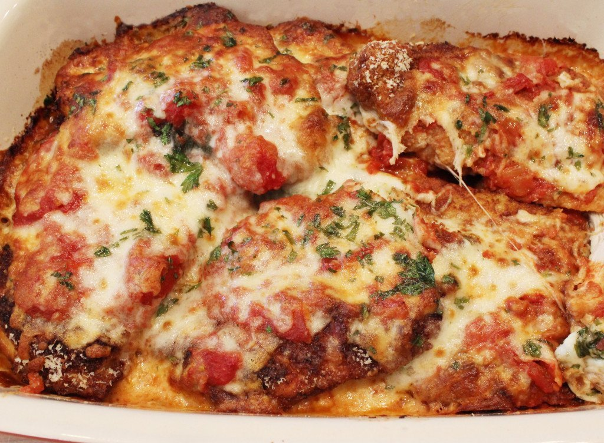

italian Meatballs

Description
Classic Chicken Parmesan is the quintessential Italian Sunday dinner for the family. This dish brings back memories of my childhood. I think my Mom made the best, and I tried to recreate her recipe here. In the video I show you how to pound the chicken breasts thin and even for better frying, and how to bread the cutlets with a traditional method of flour, egg wash, and seasoned breadcrumbs. I hope you try it!
Ingredients
- 6 boneless skinless chicken breasts
- 1 cup flour
- 3 eggs
- 3 TB cream (milk or water will work to - I used thinned down sour cream)
- Salt & black pepper to taste
- ¼ cup minced flat leaf parsley
- 1 ½ cup breadcrumbs
- 1 cup freshly grated parmesan cheese
- ½ cup olive oil
- 1 quart Marinara Sauce see my recipe
- 2 cups grated/shredded whole milk mozzarella
Steps
- Pre-heat oven to 350.
- Place one chicken breast inside a gallon size ziplock bag. Using the smooth side of a kitchen mallet pound the chicken breast to an even size all around, approximately ½ inch. Take out and set aside. Pound the rest of the chicken breasts.
- Prepare three trays for the breading process. Put the flour in tray number 1 and season with salt and pepper. In a small bowl, beat three eggs with the cream. Pour eggs into tray number 2. Add salt, pepper and ½ of the minced parsley to the eggs. Add the breadcrumbs to tray number 3. Mix in the parmesan cheese.
- To bread, dredge each breast in the flour on both sides, dip in the egg wash, and finally cover with breadcrumbs. Set aside and finish breading the rest of the cutlets.
- Heat olive oil in large skillet until very hot. Cook two cutlets at a time. Turn when start to get a golden color and cook on the other side. They will cook fast on the outside, and finish cooking in the oven. Drain on a paper towel and finish frying the rest of the cutlets.
- Add 4 big spoonfuls of Marinara sauce to the bottom of large lasagna pan or baking pan. Arrange the cutlets in a single layer or slightly overlapping. Add a spoonful of Marinara sauce over each cutlet and around sides. Sprinkle the mozzarella cheese over the cutlets, and finish with the rest of flat leaf parsley.
- Bake for 25-35 minutes until the cheese is starting to turn golden brown. The time will vary depending on the size of the cutlets.
- Serve immediately.